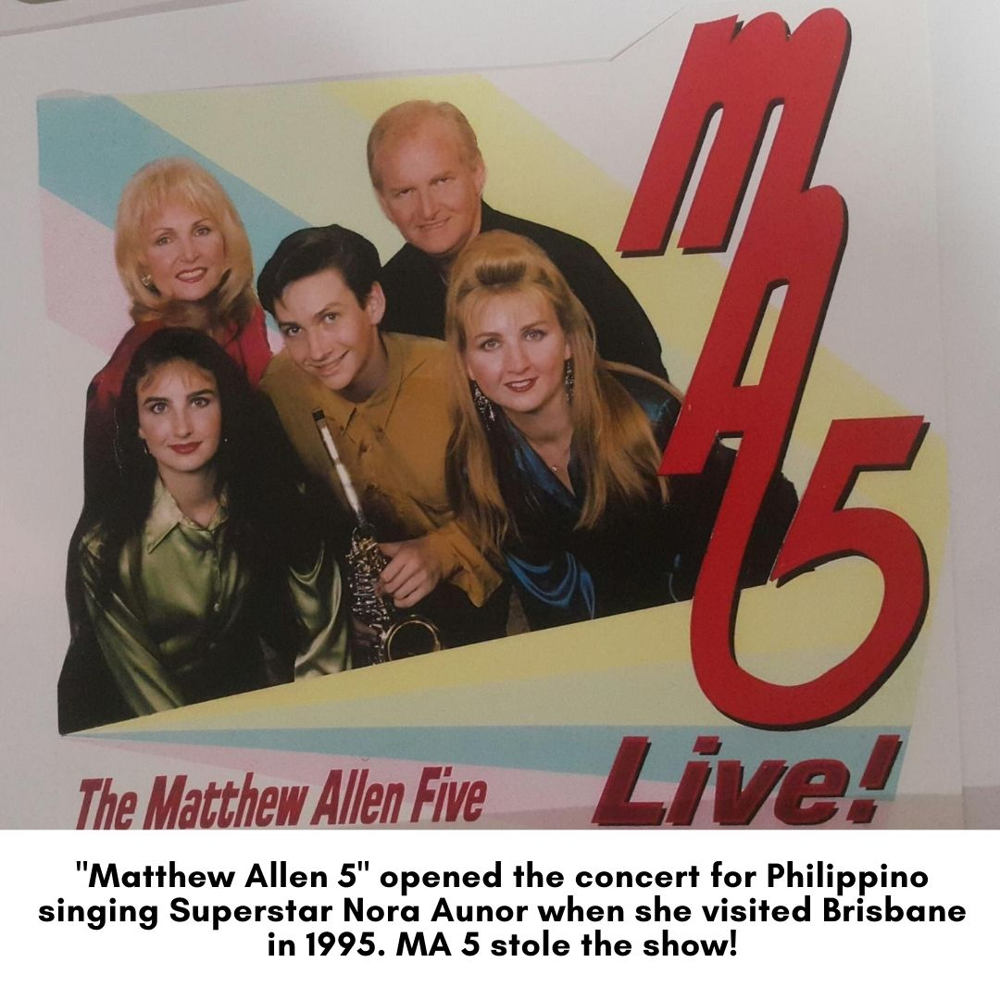

A Timeless Story
Allen met Ann in 1967, when his band The New Breed was playing Parramatta. From that night on, their lives merged into one long tour of music, singing, travel and family.
The New Breed
Allen was a qualified teacher and Ann a psychiatric nurse, but music became the love of their lives. New management soon had The New Breed playing venues in Sydney, Mount Isa and Melbourne, then took them to Vietnam for an exciting and dangerous six-month tour of the war. While Allen was away, Ann sang with The Fugitives in Sydney hotels.
After that tour, Allen and Ann were married in Parramatta in 1968. Management sent The New Breed straight back out: three more months through Vietnam, Guam, Okinawa, South Korea, Taiwan and the Philippines.
Page One Revue
A new band followed, Page One Revue. They played the Gold Coast, Melbourne hotels, nine months at the Whiskey Au-Go-Go and a run at The Lido in Melbourne. Then came an eighteen-month tour of Asia: six months at the Siam Intercontinental in Bangkok, then Singapore, Guam, Okinawa, South Korea, Saipan and three months playing private clubs in Japan.
In Bangkok, Page One Revue had their own weekly half-hour Countdown television show. Ann did voice-overs, radio and newspaper spreads for Ford, and played an English doctor in a Thai film in 1971.
Ann and Allen Ray
Back home, they left band work and became a duet, Ann and Allen Ray, playing all the big Sydney clubs alongside the top acts of the day. By invitation, they performed on stage at the Chicago Theatre for a convention of three thousand delegates.
Through the seventies and eighties they set aside time for their family of four beautiful children, and Allen combined the duet with his first occupation, teaching school.
The Matthew Allen 5

The family moved to the Gold Coast in 1990 when their son Matthew became sick. Matthew, their beautiful fifteen-year-old, died of cancer in February 1991. In his honour the family formed a band called The Matthew Allen 5, later known as the MA 5. Through the nineties this first-class band worked the corporate venues and clubs of the Gold Coast, Brisbane and the Sunshine Coast.
Timeless

Allen and Ann remain close to their three now-married children. Allen still plays the Trini Lopez Gibson he bought in Parramatta in 1967. Ann still sings lead, and plays alto sax and flute. As the duet Timeless, they especially love entertaining diners in restaurants around Bribie Island, which is exactly where you can book them.